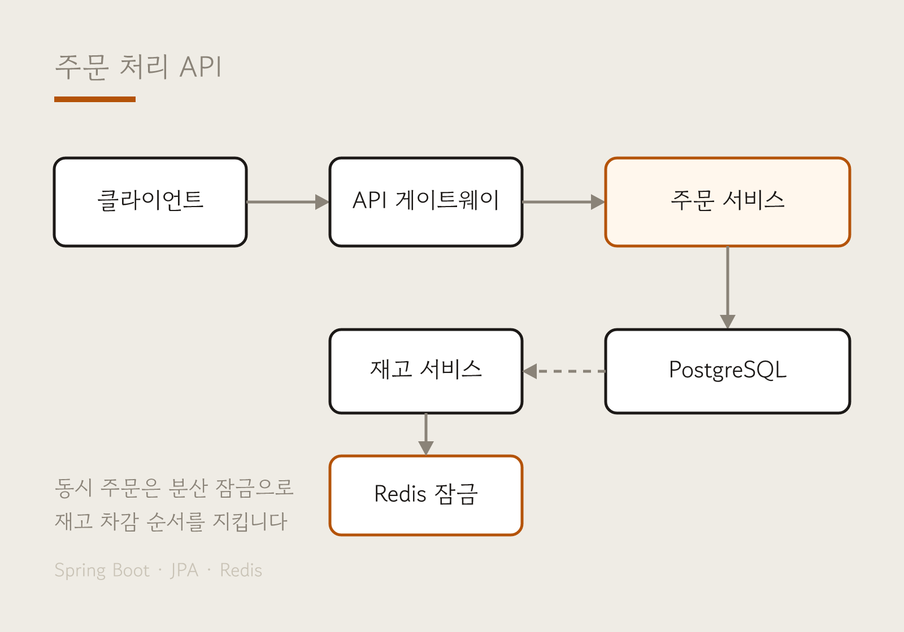
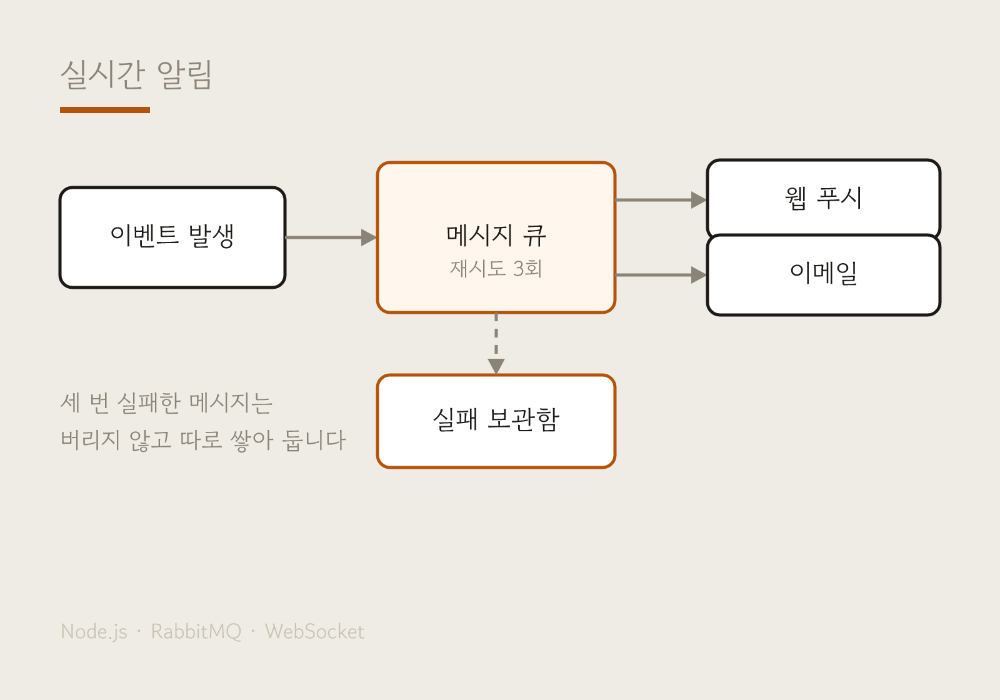
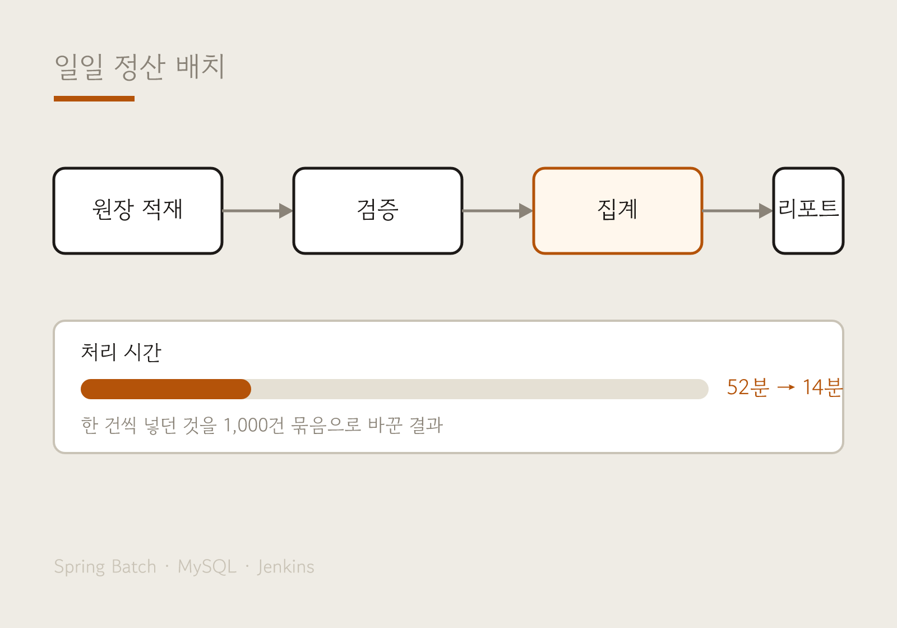
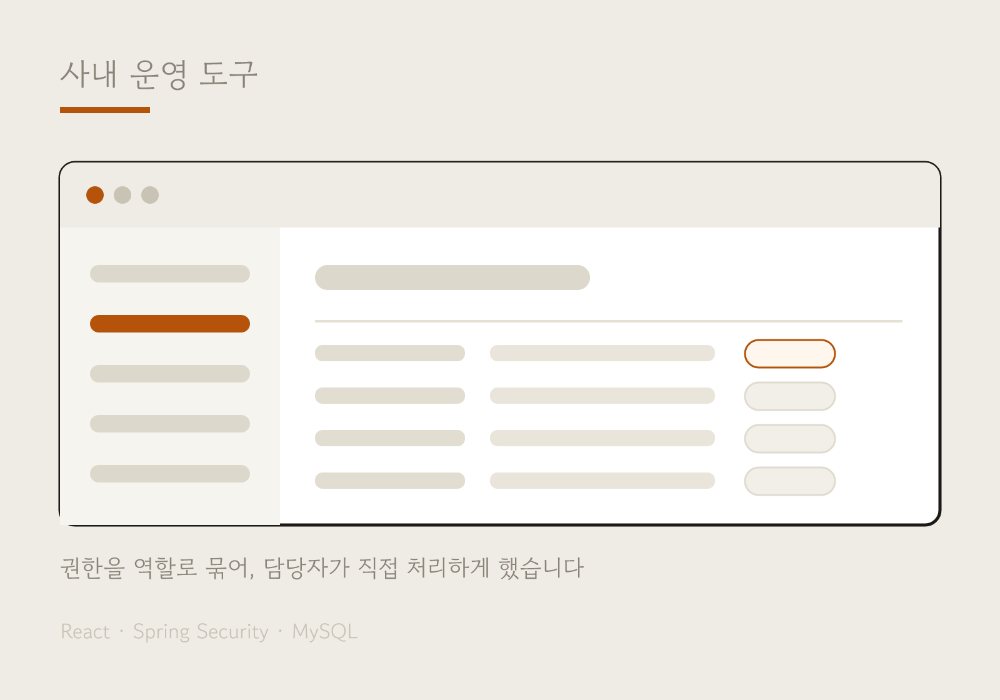

신입 백엔드 개발자 서지호입니다.
주장마다 근거를 하나씩 붙여 두었습니다 — 저장소, 수치, 그리고 막혔던 기록까지.
자바·스프링으로 API를 만드는 백엔드 신입 자리를 찾고 있습니다.
주문·정산처럼 숫자가 틀리면 안 되는 도메인에 관심이 있습니다. 통계학을 전공하며 데이터가 어긋났을 때 원인을 되짚는 일을 오래 해 봤고, 그 습관이 서버 쪽에서도 그대로 쓰인다고 느낍니다.
동시에 들어온 요청이 같은 자원을 건드릴 때 무엇이 어긋나는지를 보고 있습니다.
재고 차감에서 수량이 음수가 된 적이 있었고, 그때부터 잠금과 트랜잭션 경계를 다시 공부했습니다. 아래 프로젝트의 절반은 그 뒤에 다시 쓴 것입니다.
모르는 것은 모른다고 적어 둡니다. 대신 어디까지 확인했는지를 함께 남깁니다.
팀 프로젝트에서는 주로 API 설계와 리뷰를 맡았습니다. 규칙을 먼저 정하고 시작하는 편이 나중에 덜 다툰다는 것을 네 번의 팀 작업에서 배웠습니다.
R과 SQL로 데이터를 다루기 시작했습니다.
수강·성적 데이터베이스를 맡아 2년간 운영했습니다. 쿼리가 느려 수강신청일마다 밤을 새운 것이 서버에 관심을 갖게 된 계기였습니다.
Java · Spring Boot · JPA · MySQL. 팀 프로젝트 4개를 마쳤고, 그중 두 개는 수료 후 혼자 다시 썼습니다.
같은 해 5월 SQLD를 먼저 땄습니다.
2박 3일 동안 4명이 정산 자동화 도구를 만들었습니다. 백엔드와 배포를 맡았습니다.
아래 프로젝트를 계속 손보고 있습니다. 커밋 기록이 곧 근거입니다.
실제로 프로젝트에 넣어 돌려 본 것만 적었습니다. 옆의 작은 글씨는 어디에 썼는지입니다.
네 개 모두 코드가 공개되어 있습니다. 카드를 누르면 무엇을 왜 그렇게 했는지가 펼쳐집니다.
혼자 만든 것과 팀으로 만든 것을 나눠 적었고, 팀 프로젝트는 제가 맡은 부분만 적었습니다.

주문 처리 API Spring Boot · JPA · PostgreSQL · Redis 개발기간 2025.09 – 2025.11 · 1인 · 설계부터 배포까지 ↗ 링크
실시간 알림 서비스 Node.js · RabbitMQ · WebSocket 개발기간 2025.12 – 2026.01 · 1인 · 메시지 처리 담당 ↗ 링크
일일 정산 배치 Spring Batch · MySQL · Jenkins 개발기간 2025.11 · 4인 팀 · 배치·배포 담당 (해커톤 우수상) ↗ 링크
사내 운영 도구 React · Spring Security · MySQL 개발기간 2026.02 – 2026.04 · 2인 · 백엔드·권한 담당 ↗ 링크무엇을 만들었나 — 상품을 주문하면 재고를 줄이고 결제 상태를 기록하는 API입니다.
왜 다시 썼나 — 부트캠프 때 만든 첫 버전은 주문이 몰리면 재고가 음수가 됐습니다. 조회한 뒤 차감하는 사이에 다른 요청이 끼어들었기 때문입니다.
어떻게 고쳤나 — 재고 차감 구간을 Redis 분산 잠금으로 감싸고, 트랜잭션 경계를 서비스 계층으로 옮겼습니다. 동시 요청 200건을 넣는 테스트를 먼저 만들어 실패를 재현한 뒤 고쳤습니다.
결과 — 같은 테스트에서 재고 불일치가 0건이 됐습니다. 대신 잠금 대기로 평균 응답이 40ms 늘었고, 이 교환이 타당한지는 아직 더 볼 생각입니다.
무엇을 만들었나 — 주문 상태가 바뀌면 웹 푸시와 이메일로 알려 주는 서비스입니다.
막혔던 지점 — 메일 서버가 잠깐 죽었을 때 그 시간대 알림이 통째로 사라졌습니다. 로그에도 남지 않아 며칠 뒤에야 알았습니다.
어떻게 고쳤나 — 재시도를 세 번까지 하고, 그래도 실패하면 버리지 않고 별도 저장소에 쌓게 했습니다. 쌓인 건수를 헬스 체크에 노출해 눈에 보이게 만들었습니다.
배운 것 — 실패를 없애는 것보다 실패를 보이게 만드는 편이 먼저였습니다.
무엇을 만들었나 — 운영 담당자가 개발자에게 부탁하지 않고 직접 데이터를 고칠 수 있는 내부 도구입니다.
고민한 것 — 아무나 다 고칠 수 있으면 위험하고, 너무 잠그면 결국 개발자를 부릅니다.
어떻게 했나 — 권한을 사람이 아니라 역할에 붙였습니다. 역할별로 볼 수 있는 화면과 바꿀 수 있는 항목을 나눴고, 모든 변경은 누가 언제 무엇을 바꿨는지 남게 했습니다.
남은 것 — 감사 로그가 쌓이는 속도를 아직 재보지 않았습니다. 다음에 손볼 부분입니다.
증상 — 주문 테스트를 200건 동시에 넣었더니 재고가 -3이 됐습니다. 한 건씩 넣을 때는 멀쩡했습니다.
원인을 좁힌 과정 — 먼저 로그에 재고 조회값과 차감 후 값을 함께 찍었습니다. 같은 재고값을 여러 요청이 동시에 읽고 있었습니다. 조회와 차감 사이가 원자적이지 않다는 뜻이었습니다.
고친 방법 — 상품 단위로 Redis 잠금을 잡고, 잠금 안에서만 조회·차감을 하도록 바꿨습니다. 데이터베이스 비관적 잠금도 후보였지만, 재고 서비스가 나중에 분리될 예정이라 서비스 밖에서도 통하는 쪽을 골랐습니다.
남은 숙제 — 잠금을 잡지 못했을 때의 대기 시간을 아직 상수로 두고 있습니다. 부하에 따라 조정하는 방법을 찾고 있습니다.
증상 — 새벽 2시에 시작한 정산 배치가 8시가 넘어 끝났습니다. 데이터는 맞았지만 시간이 문제였습니다.
확인한 것 — 10만 건을 한 건씩 INSERT하고 있었습니다. 쿼리 자체는 빨랐지만 왕복 횟수가 10만 번이었습니다.
고친 방법 — 1,000건씩 묶어 쓰도록 청크 단위를 잡고, 커넥션을 재사용하게 했습니다. 묶음 크기는 100·500·1,000·5,000으로 재 보고 정했습니다. 5,000부터는 메모리만 늘고 시간은 거의 줄지 않았습니다.
결과와 배운 것 — 52분에서 14분이 됐습니다. 느린 원인이 쿼리가 아니라 횟수일 수 있다는 것을 이때 처음 알았습니다.
증상 — 특정 시간대 알림만 안 갔다는 문의가 들어왔습니다. 에러 로그에는 아무것도 없었습니다.
원인 — 메일 발송이 실패하면 예외를 잡아 로그만 남기고 넘어가게 짜 두었습니다. 그 로그마저 레벨이 낮아 수집되지 않았습니다. 실패가 성공처럼 지나간 것입니다.
고친 방법 — 세 번까지 재시도하고, 끝내 실패하면 별도 저장소에 원문을 넣습니다. 쌓인 건수를 헬스 체크 응답에 넣어, 0이 아니면 바로 보이게 했습니다.
배운 것 — 예외를 삼키는 코드가 가장 무섭다는 말을 이때 체감했습니다. 지금은 무언가를 잡아낼 때마다 "이걸 누가 언제 알게 되나"를 먼저 적어 둡니다.
이력서를 보시고 궁금한 점이 있으면 편하게 메일 주시기 바랍니다.
평일 기준 하루 안에 답장드립니다. 코딩 테스트나 과제 전형도 언제든 좋습니다.